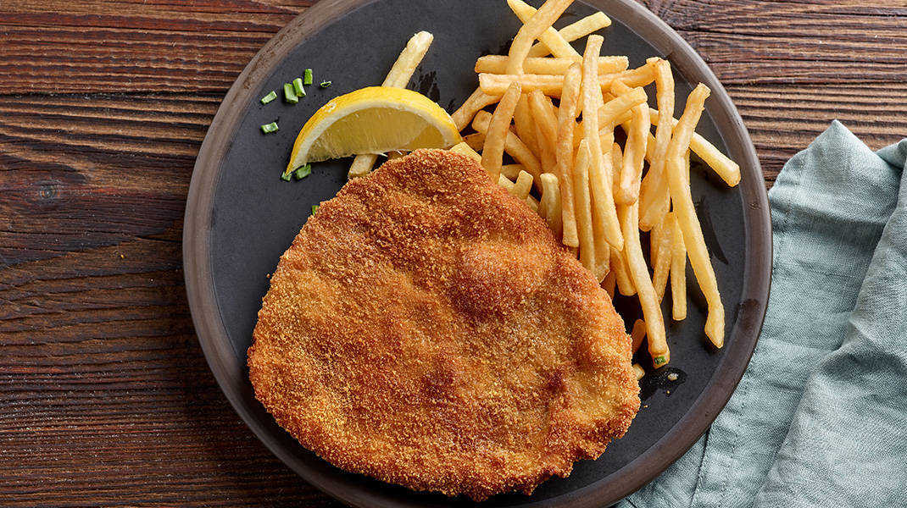

Milanesa Recipe

Description
Everyone who knows my grandma loves her Milanesa empanizada (breaded
Milanese). I learned how to cook thanks to her, and when I was 7 years old
I learned how to cook this Milanesa de res recipe. I consider this recipe
a basic on Mexican cuisine. You're gonna love it! You can serve this with
French fries, rice, refried beans, or a salad (we use lettuce, tomato,
avocado, and cucumber slices with a twist of lemon). Corn or flour
tortillas go great with all this.
Ingredients
- 2 large eggs, or more as needed
- 4 thin slices boneless round steak
- salt and ground black pepper to taste
- 40 saltine crackers, smashed
- vegetable oil for frying
Instructions
-
Crack eggs in a medium bowl and beat slightly with a fork or whisk. Set
aside. Place smashed crackers on a plate big enough for the steak.
-
Season steak with salt and pepper and soak in the beaten egg. Transfer
to the smashed crackers and cover both sides with the crackers using a
spoon; you can press a little bit with the spoon so that the crackers
stick better.
-
Heat a frying pan over medium heat and add enough oil to cover the
bottom half of the steaks. Cook 2 steaks in the hot oil until crackers
have turned light golden brown, 4 to 5 minutes.
-
Turn and continue to cook until golden and meat is no longer pink, 4 to
5 minutes more. Transfer to a paper towel-lined plate to drain excess
oil. Repeat with remaining steaks.
Back